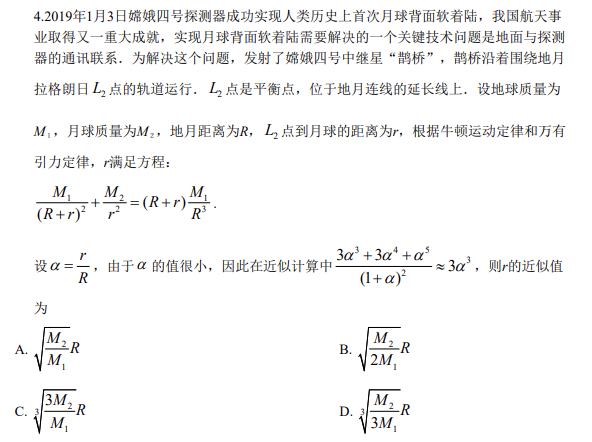
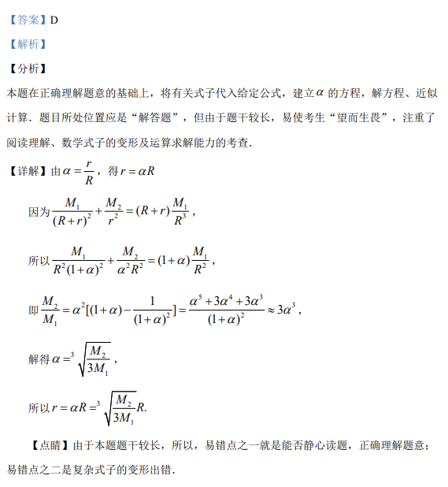

考点：万有引力定律 牛顿运动定律 近似计算 数学建模 实际应用

嫦娥四号在月球 L2 点轨道运行，由万有引力定律和牛顿运动定律推导，求 L2 点到月球距离 r 的近似值。

📄 原 PDF 第 2 页：
素材/真题/吉林/2008-2024·（吉林）数学高考真题/2019年高考数学试卷（理）（新课标Ⅱ）（解析卷）.pdf
4.2019年1月3日嫦娥四号探测器成功实现人类历史上首次月球背面软着陆，我国航天事 业取得又一重大成就，实现月球背面软着陆需要解决的一个关键技术问题是地面与探测 器的通讯联系．为解决这个问题，发射了嫦娥四号中继星“鹊桥”，鹊桥沿着围绕地月 拉格朗日2L点的轨道运行．2L点是平衡点，位于地月连线的延长线上．设地球质量为 M１，月球质量为M２，地月距离为R，2L点到月球的距离为r，根据牛顿运动定律和万有 引力定律，r满足方程： 1 2 12 2 3( )( )M M MR rR r r R+ = ++. 设rRa=，由于a的值很小，因此在近似计算中 3 4 5323 33(1 )a a aaa+ +»+ ，则r的近似值 为 A. 21MRM B. 212MRM C. 2313MRM D. 2313MRM